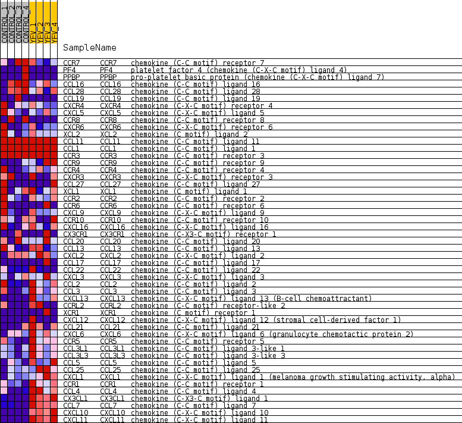
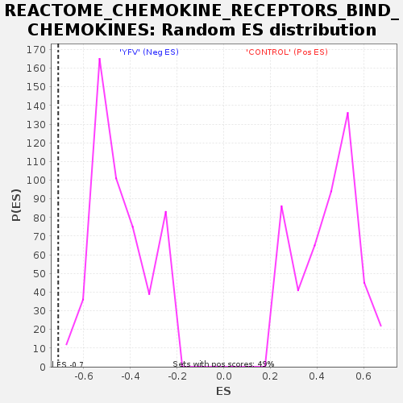

Profile of the Running ES Score & Positions of GeneSet Members on the Rank Ordered List
| Dataset | MATRIZ_GSE99081_collapsed_to_symbols.gsea_CLASE_99081.cls#CONTROL_versus_YFV |
| Phenotype | gsea_CLASE_99081.cls#CONTROL_versus_YFV |
| Upregulated in class | YFV |
| GeneSet | REACTOME_CHEMOKINE_RECEPTORS_BIND_CHEMOKINES |
| Enrichment Score (ES) | -0.7079012 |
| Normalized Enrichment Score (NES) | -1.5913044 |
| Nominal p-value | 0.0 |
| FDR q-value | 0.07147359 |
| FWER p-Value | 0.943 |
| SYMBOL | TITLE | RANK IN GENE LIST | RANK METRIC SCORE | RUNNING ES | CORE ENRICHMENT | |
|---|---|---|---|---|---|---|
| 1 | CCR7 | chemokine (C-C motif) receptor 7 | 3381 | 0.301 | -0.1975 | No |
| 2 | PF4 | platelet factor 4 (chemokine (C-X-C motif) ligand 4) | 3765 | 0.261 | -0.2113 | No |
| 3 | PPBP | pro-platelet basic protein (chemokine (C-X-C motif) ligand 7) | 4043 | 0.240 | -0.2193 | No |
| 4 | CCL16 | chemokine (C-C motif) ligand 16 | 4104 | 0.235 | -0.2141 | No |
| 5 | CCL28 | chemokine (C-C motif) ligand 28 | 4893 | 0.167 | -0.2565 | No |
| 6 | CCL19 | chemokine (C-C motif) ligand 19 | 5199 | 0.137 | -0.2701 | No |
| 7 | CXCR4 | chemokine (C-X-C motif) receptor 4 | 5488 | 0.114 | -0.2836 | No |
| 8 | CXCL5 | chemokine (C-X-C motif) ligand 5 | 5793 | 0.091 | -0.2989 | No |
| 9 | CCR8 | chemokine (C-C motif) receptor 8 | 6070 | 0.070 | -0.3133 | No |
| 10 | CXCR6 | chemokine (C-X-C motif) receptor 6 | 6559 | 0.034 | -0.3422 | No |
| 11 | XCL2 | chemokine (C motif) ligand 2 | 7108 | 0.005 | -0.3758 | No |
| 12 | CCL11 | chemokine (C-C motif) ligand 11 | 8227 | 0.000 | -0.4449 | No |
| 13 | CCL1 | chemokine (C-C motif) ligand 1 | 9131 | 0.000 | -0.5006 | No |
| 14 | CCR3 | chemokine (C-C motif) receptor 3 | 9142 | 0.000 | -0.5013 | No |
| 15 | CCR9 | chemokine (C-C motif) receptor 9 | 9327 | -0.000 | -0.5126 | No |
| 16 | CCR4 | chemokine (C-C motif) receptor 4 | 9510 | -0.003 | -0.5238 | No |
| 17 | CXCR3 | chemokine (C-X-C motif) receptor 3 | 9522 | -0.004 | -0.5243 | No |
| 18 | CCL27 | chemokine (C-C motif) ligand 27 | 9541 | -0.005 | -0.5252 | No |
| 19 | XCL1 | chemokine (C motif) ligand 1 | 9940 | -0.023 | -0.5490 | No |
| 20 | CCR2 | chemokine (C-C motif) receptor 2 | 10067 | -0.029 | -0.5556 | No |
| 21 | CCR6 | chemokine (C-C motif) receptor 6 | 10092 | -0.030 | -0.5560 | No |
| 22 | CXCL9 | chemokine (C-X-C motif) ligand 9 | 10723 | -0.077 | -0.5920 | No |
| 23 | CCR10 | chemokine (C-C motif) receptor 10 | 10777 | -0.083 | -0.5921 | No |
| 24 | CXCL16 | chemokine (C-X-C motif) ligand 16 | 10917 | -0.095 | -0.5971 | No |
| 25 | CX3CR1 | chemokine (C-X3-C motif) receptor 1 | 11005 | -0.101 | -0.5987 | No |
| 26 | CCL20 | chemokine (C-C motif) ligand 20 | 11006 | -0.101 | -0.5948 | No |
| 27 | CCL13 | chemokine (C-C motif) ligand 13 | 11478 | -0.146 | -0.6184 | No |
| 28 | CXCL2 | chemokine (C-X-C motif) ligand 2 | 11660 | -0.161 | -0.6235 | No |
| 29 | CCL17 | chemokine (C-C motif) ligand 17 | 11692 | -0.163 | -0.6193 | No |
| 30 | CCL22 | chemokine (C-C motif) ligand 22 | 13128 | -0.318 | -0.6959 | Yes |
| 31 | CXCL3 | chemokine (C-X-C motif) ligand 3 | 13194 | -0.327 | -0.6875 | Yes |
| 32 | CCL2 | chemokine (C-C motif) ligand 2 | 13259 | -0.335 | -0.6788 | Yes |
| 33 | CCL3 | chemokine (C-C motif) ligand 3 | 13556 | -0.374 | -0.6830 | Yes |
| 34 | CXCL13 | chemokine (C-X-C motif) ligand 13 (B-cell chemoattractant) | 13709 | -0.396 | -0.6774 | Yes |
| 35 | CCRL2 | chemokine (C-C motif) receptor-like 2 | 13801 | -0.412 | -0.6674 | Yes |
| 36 | XCR1 | chemokine (C motif) receptor 1 | 14330 | -0.500 | -0.6811 | Yes |
| 37 | CXCL12 | chemokine (C-X-C motif) ligand 12 (stromal cell-derived factor 1) | 14333 | -0.500 | -0.6624 | Yes |
| 38 | CCL21 | chemokine (C-C motif) ligand 21 | 14784 | -0.562 | -0.6689 | Yes |
| 39 | CXCL6 | chemokine (C-X-C motif) ligand 6 (granulocyte chemotactic protein 2) | 14871 | -0.585 | -0.6521 | Yes |
| 40 | CCR5 | chemokine (C-C motif) receptor 5 | 14923 | -0.598 | -0.6327 | Yes |
| 41 | CCL3L1 | chemokine (C-C motif) ligand 3-like 1 | 15102 | -0.654 | -0.6189 | Yes |
| 42 | CCL3L3 | chemokine (C-C motif) ligand 3-like 3 | 15121 | -0.663 | -0.5950 | Yes |
| 43 | CCL5 | chemokine (C-C motif) ligand 5 | 15208 | -0.693 | -0.5741 | Yes |
| 44 | CCL25 | chemokine (C-C motif) ligand 25 | 15325 | -0.755 | -0.5527 | Yes |
| 45 | CXCL1 | chemokine (C-X-C motif) ligand 1 (melanoma growth stimulating activity, alpha) | 15550 | -0.859 | -0.5341 | Yes |
| 46 | CCR1 | chemokine (C-C motif) receptor 1 | 15616 | -0.893 | -0.5043 | Yes |
| 47 | CCL4 | chemokine (C-C motif) ligand 4 | 15829 | -1.178 | -0.4729 | Yes |
| 48 | CX3CL1 | chemokine (C-X3-C motif) ligand 1 | 16148 | -2.685 | -0.3910 | Yes |
| 49 | CCL7 | chemokine (C-C motif) ligand 7 | 16166 | -2.937 | -0.2810 | Yes |
| 50 | CXCL10 | chemokine (C-X-C motif) ligand 10 | 16187 | -3.355 | -0.1553 | Yes |
| 51 | CXCL11 | chemokine (C-X-C motif) ligand 11 | 16217 | -4.190 | 0.0014 | Yes |

